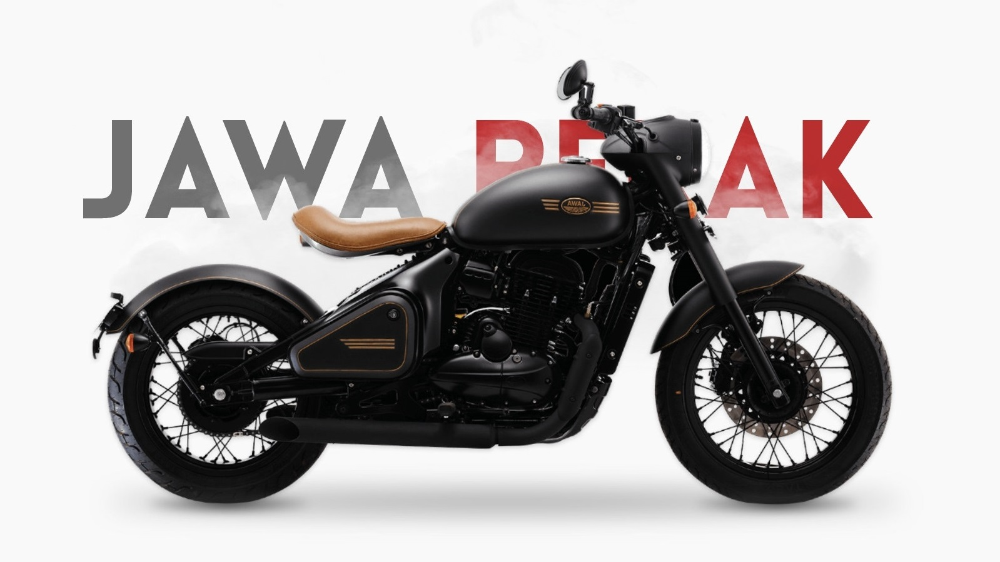
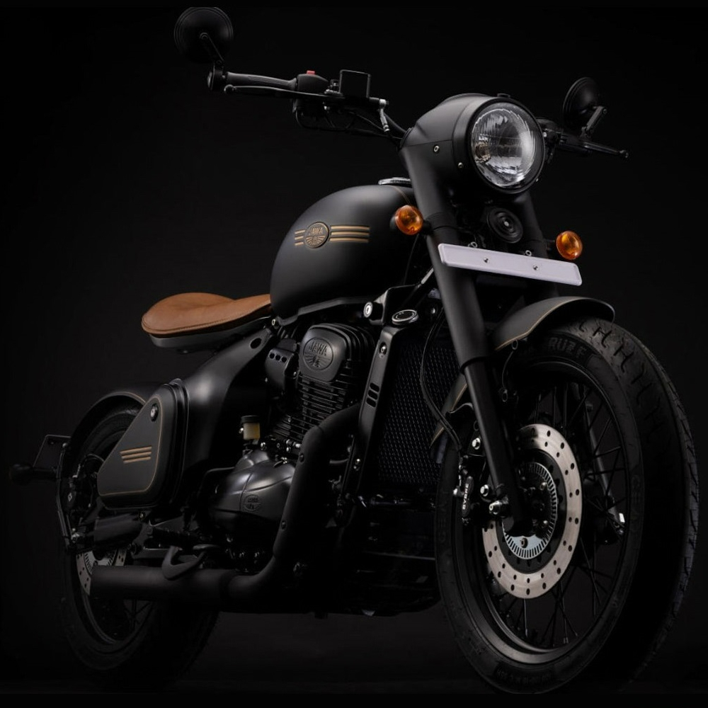
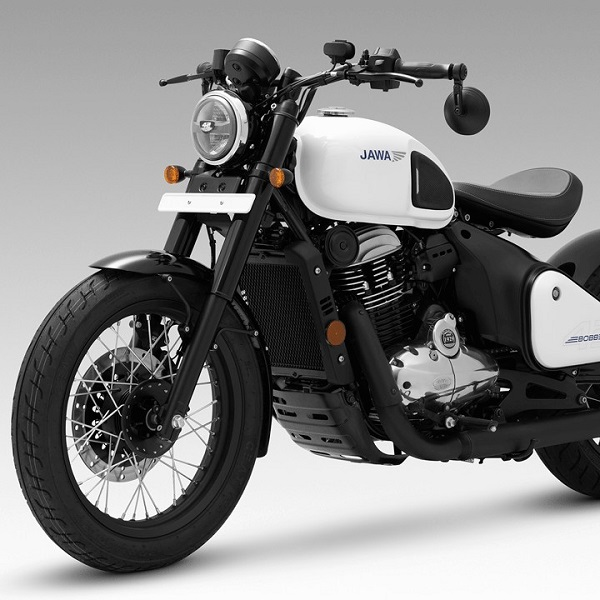
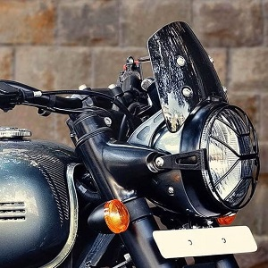
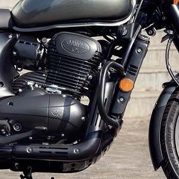
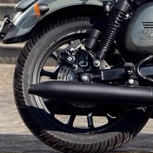
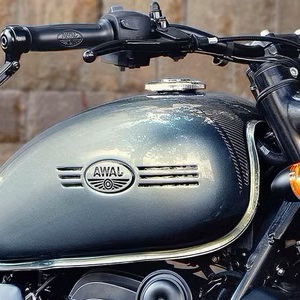
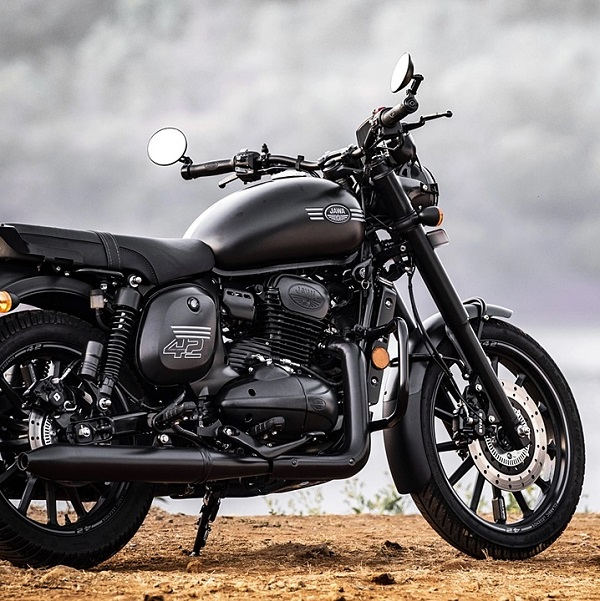

La Jawa Perak est une moto puissante et emblématique dont les origines remontent aux années 1940, lorsque la marque Jawa fut fondée en Tchécoslovaquie. Forte d'un riche héritage de savoir-faire et d'innovation, Jawa s'est rapidement imposée grâce à ses performances exceptionnelles, sa fiabilité et son design distinctif.
Le modèle Perak occupe une place de choix dans l'histoire de Jawa. Lancée à la fin des années 1940 comme modèle phare, elle était réputée pour son ingénierie de pointe et ses performances extraordinaires. Son nom, « Perak », dérive du mot malais signifiant « argent », symbolisant sa qualité et son prestige exceptionnels. Au fil des ans, la Jawa Perak a évolué et continue de séduire les motards par son charme intemporel.
Sous son allure saisissante, la Jawa Perak cache une puissance impressionnante grâce à son moteur performant. Équipée d'un moteur 334 cm³ à refroidissement liquide, à la fois puissant et raffiné, elle offre une expérience de conduite exaltante, alliant avec brio puissance, agilité et souplesse. Au-delà de ses performances exceptionnelles, la Jawa Perak témoigne d'un savoir-faire et d'un souci du détail remarquables. Chaque composant, de l'échappement finement réglé à la carrosserie méticuleusement travaillée, illustre l'engagement de la marque envers l'excellence et sa volonté de créer des motos à la fois esthétiques et robustes.






